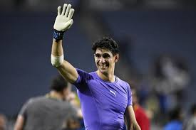

| Nombre | Posición | Edad | Biografía | Portada |
|---|---|---|---|---|
| Achraf Hakimi | Lateral derecho / Extremo | 25 |
Trayectoria: PSG, Borussia Dortmund, Inter de Milán, selección nacional. Características: Velocidad, recorrido por la banda y capacidad ofensiva. Logros: Figura clave en la defensa y ataque de Marruecos. |
 |
| Adam Masina | Defensa | 28 |
Trayectoria: Clubes europeos, selección nacional. Características: Defensa sólido, fuerza y anticipación. Logros: Defensa confiable de Marruecos. |
 |
| Bono | Portero | 31 |
Trayectoria: Sevilla FC, selección nacional. Características: Reflejos, seguridad y liderazgo bajo los palos. Logros: Portero titular y referente de Marruecos. |
 |
| Jawad El Yamiq | Defensa central | 30 |
Trayectoria: Clubes europeos, selección nacional. Características: Defensa central, fuerza y juego aéreo. Logros: Defensa titular de Marruecos. |
 |
| Maroan Sannadi | Centrocampista | 26 |
Trayectoria: Clubes locales y europeos, selección nacional. Características: Visión de juego, pase y recuperación. Logros: Promesa del mediocampo marroquí. |
 |
| Mohamed Chibi | Defensa / Lateral | 27 |
Trayectoria: Clubes locales y selección nacional. Características: Velocidad, marcaje y recorrido por la banda. Logros: Lateral sólido de Marruecos. |
 |
| Munir El Kajoui | Portero | 32 |
Trayectoria: Clubes europeos, selección nacional. Características: Reflejos, liderazgo y seguridad bajo los palos. Logros: Portero experimentado de Marruecos. |
 |
| Nayef Aguerd | Defensa central | 28 |
Trayectoria: Clubes europeos, selección nacional. Características: Defensa sólido, fuerza y juego aéreo. Logros: Figura en la defensa marroquí. |
 |
| Omar El Hilali | Centrocampista / Delantero | 22 |
Trayectoria: Club local, selección nacional. Características: Velocidad, técnica y llegada al área. Logros: Promesa ofensiva de Marruecos. |
 |